Flashback bentar guys
Ga Kerasa ya syengg, aku udah setahun cinta sama kamu. Aku inget awal awal aku suka itu masih malu malu dan aku beraniin buat confess pake akun fake
WKWKWKWK freak banget ya ngga gentle. Sumpahhh... aku pengen sekolah lagi dehh buat ngerasain feel suka diem diem sama kamu.
Dulu mau fotbar aja aku masih modus karna aku dulu masi belum seberani sekarang.
Sampe aku sengaja nonton konse
r buat ngodein kamu. Aku pake segala cara buat bisa deket-deketan sama kamu tapi kamu dulu sok stecu swommbbooonkkkkkkk. Untung bukber sama event terakhir aku ada fotbar, tapi... kisah kita dulu ga banyak banyak banget yaa, kaya momennya itu udah di ujungg banget dan ngarah ngarah keperpisahan gitu HUHUHU im so sad:(.
Mungkin karena ini udaa jalannya yaa, btw keren juga cowonya ketua (ketuaan) cewenya sekrenya trus jabatannya cowonya nurun ke cewenya behh behh behhh. Kaya di film-film syengg, segitu duluu aja flashbacknya ya kita masih punya sesi lain nihh, nanti kita flasback lagi bareng bareng yaa diliat pov dari kamu dan pov aku :)
Kenapa aku pilih backsound "her" buat ini karena bagi aku lagu ini kaya ngedeskripsiin pas aku ketemu kamu. Pertama kali aku denger
kaya DEG, SUMPAHH BAGUS BANGETT saran dan selera kamu. i just wanna say thankyou, i lucky to have you. Aku gatau ngungkapinnya gimana, aku bener bener seneng, bahagia
sama kamu. Di segala kondisi aku cuma kamu temen aku dan moodbooster aku. Terimakasih ya cantikk akuu semoga hari hari kamu selalu happy, mau sejahat apapun dunia dan semesta ke kamu, please dont be hurt and blaming yourself.
Segala masalah atau musibah its not your control, bukan kamu yang ngendaliin. Dan aku selalu doain kamu yang terbaik . jangan nyerah kejer semua impian kamu. aku pasti support kamu mau gimana pun kondisi kamu. semangat sayang. Dan aku juga
doain kamu selalu berada dilingkungan orang orang baik serta hal-hal baik. Dan semogaa kamu keterima dikampus impian kamu ya!!! Aamiin...., aku bersyukur punya perempuan hebat kaya kamu. Dan aku ingetin sekali lagi yaa. kamu ga harus hadepin semuanya sendiri kalau suatu hari kamu ada rasa takut, capek, ngerasa sendirian aku bakal ada di sisi kamu, meluk erat kamu
terimakasih yaa kesayangan akuu I LOVE YOU
First Message
Kamuu bosen ga? baca longtext dari aku yang isinya itu itu trus. Karna saking banyak aku minta maaf ke kamu, aku mau ucapin makasih banyaakkk buat kamuu. Kalo aku ga kenal kamu mungkin aku gatau gimana rasanya punya
someone to talk like a home, ataupun orang yang bener bener ngerti dan maklum sama aku setelah aku buat kesalahan, Gatau caranya mengakui kesalahan dan makasih udah hadir dihidup aku dan ngasih aku kesempatan buat hadir juga dihidup kamu
jujur aku ngerasa hidup, ngerasa kalo hidup ini berarti dan berharga sejak aku kenal sama kamu. Makasih udah maafin aku berkali kali untuk kesalahan aku. Makasih udaa bertahan sampe sekarang dan aku minta maaf yaa aku masih sering bikin kamu bete kesel badmood bahkan nangis. Aku blum cukup bijaksana ngehadepin kamu, aku masih sering bikin kesalahan yang sama. Dan kadang kalo berantem aku sering mentingin ego aku :(.
Dan aku masih suka cemburu berlebihan, n aku harap kita tetep bisa saling ngerti ya, menurut aku masih ada beberapa yang kita sering gacocok. Dan kadang kita lebih milih ngalah dari pada ribut, aku pikir pikir sihh salah ya? apa bener? coba kamu komen deh.
Terimakasih sudah menjadi pendengar yang baik dan maaf aku blum bisa jadi yang terbaik buat kamu dan satu hal lagi, kamu kalo ada sesuatu kamu cerita ke aku ya?
apapun itu mau penting ga penting kasih tau ajaa, kalo menurut kamu respon aku kurang di wa kita callan, kalo masih kurang juga kita ketemu kita obrolin okayy?
Maaf ya aku cuma bisa bikinin ini sebagai kado sederhana buat valentine kamu, dan maaf aku blum bisa ngasih sesuatu yang mewah-mewah buat kamu kaya orang orang lain
di paragraf ini aku jadiin khusus permintaan maaf aku, aku juga belum bisa jadi cowo yang baik yang kamu pengen, dan ga sesuai ekspetasi kamu ketika punya hubungan sama orang.
Maaf juga kalo aku masih sering bikin kamu marah, masih sering gagal jadi pendengar kamu dan aku rasa aku kaya lebah yang dateng dibunga yang indah. terimakasih ya udaa ngajarin aku banyak hal. Terutama hal hal kecil yang sebelumnya aku gatau dan
makasih buat kamu udah bertahan sama aku, aku gatau kalo semisal kamu nemuin seseorang yang lebih baik dari aku, aku harap jangan berpindah yaa
aku sayang banget sama kamu tapi aku rasa aku belum bisa nunjukin rasa kasih sayang yang jelas ke kamu segini aja. TERIMAKASIH SAYANGG, I LOVE YOUU
Last Message
Klik gembok kecil ini
🔒
Dan kenapa aku pilih backsound "her" buat ini karena bagi aku lagu ini kaya ngedeskripsiin aku pas ketemu kamu, dan aku pake lagu lain juga yang ngedeskripsiin kamu:>. Pertama kali aku denger
kaya DEG SUMPAHH BAGUS BANGETT saran dan selera kamu. i just wanna say thankyou. i lucky to have you. aku gatau ngungkapinnya gimana, aku bener bener seneng, bahagia
sama kamu. Di segala kondisi aku cuma kamu temen aku dan moodbooster aku. Terimakasih ya cantikk akuu semoga hari hari kamu selalu happy, mau sejahat apapun dunia dan semesta ke kamu, please dont be hurt and blaming yourself.
Segala masalah atau musibah its not your control, bukan kamu yang ngendaliin. Dan aku selalu doain kamu yang terbaik . jangan nyerah kejer semua impian kamu. aku pasti support kamu mau gimana pun kondisi kamu. semangat sayang. Dan aku juga
doain kamu selalu berada dilingkungan orang orang baik serta hal-hal baik. Dan semogaa kamu keterima dikampus impian kamu ya!!! Aamiin...., aku bersyukur punya perempuan hebat kaya kamu. Dan aku ingetin sekali lagi yaa. kamu ga harus hadepin semuanya sendiri kalau suatu hari kamu ada rasa takut, capek, ngerasa sendirian aku bakal ada di sisi kamu, meluk erat kamu
terimakasih yaa kesayangan akuu I LOVE YOU
Terima kasih udah hadir di hidup aku.
Terima kasih udah bertahan, tumbuh,
dan berjalan sejauh ini.
Aku gatau masa depan nanti kaya gimana
tapi aku kamu tahu satu hal
aku mau ngejalanin semuanya bareng kamu.
Happy Valentine 🤍
 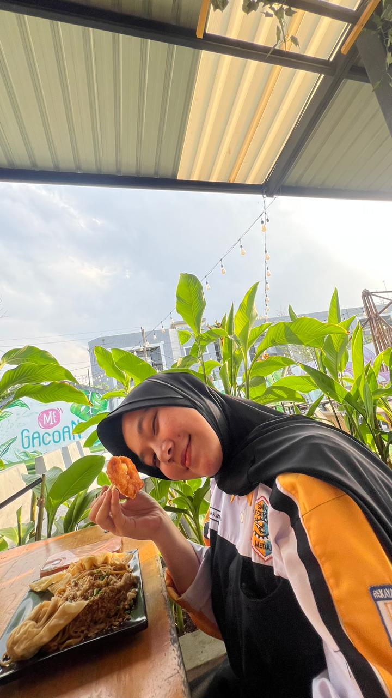
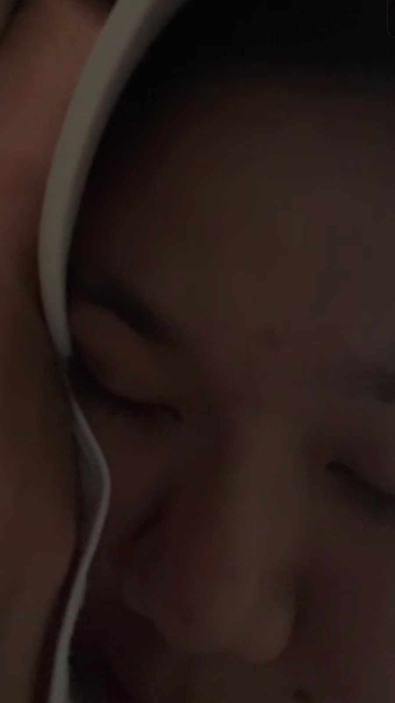
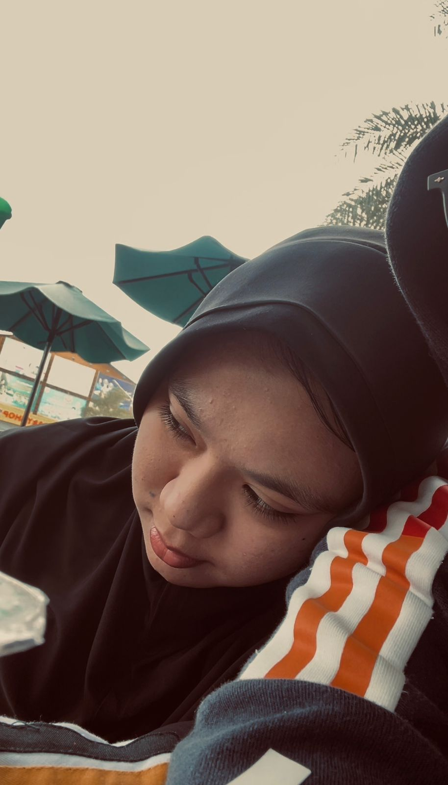
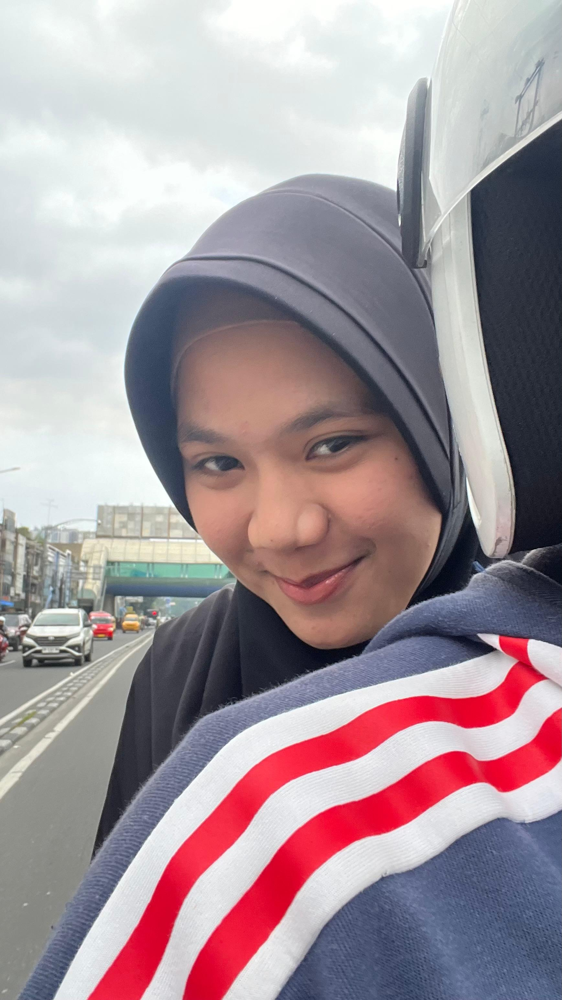
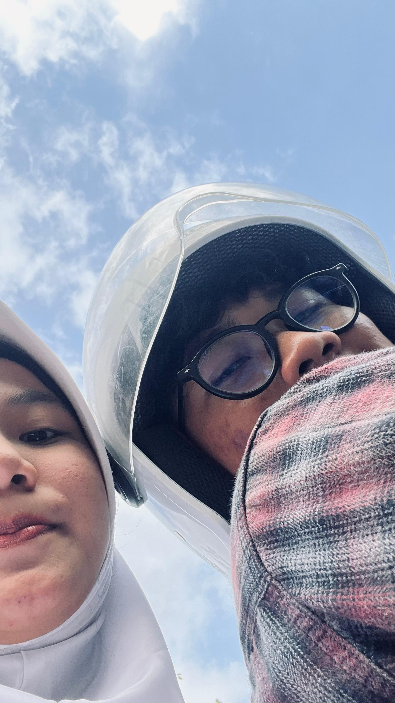
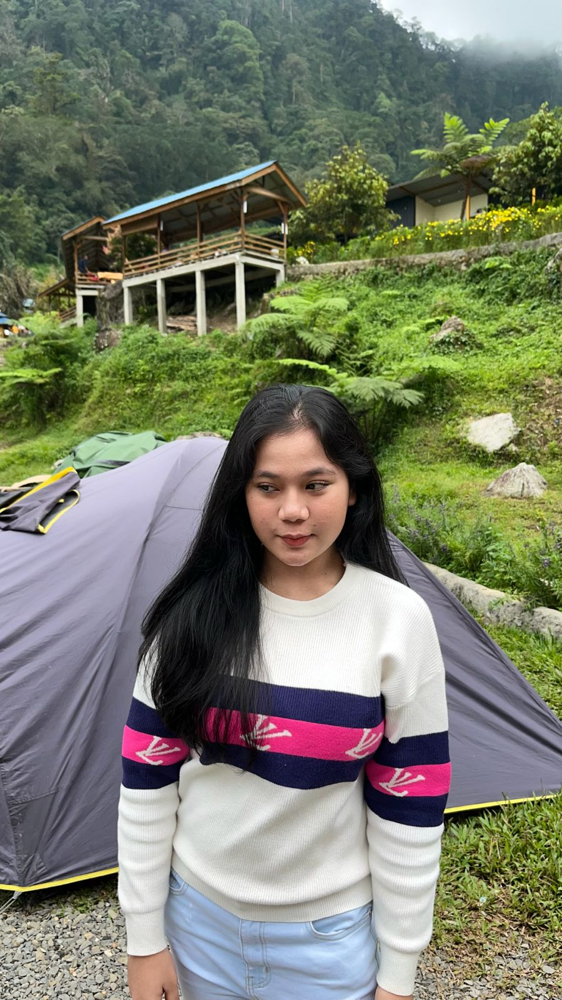
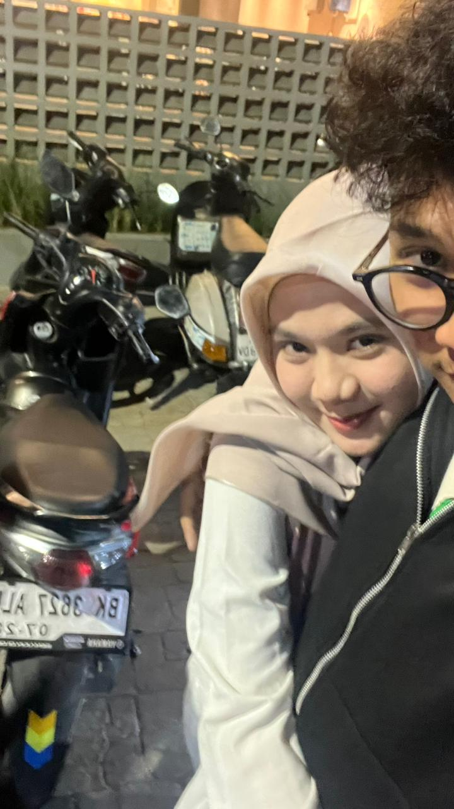
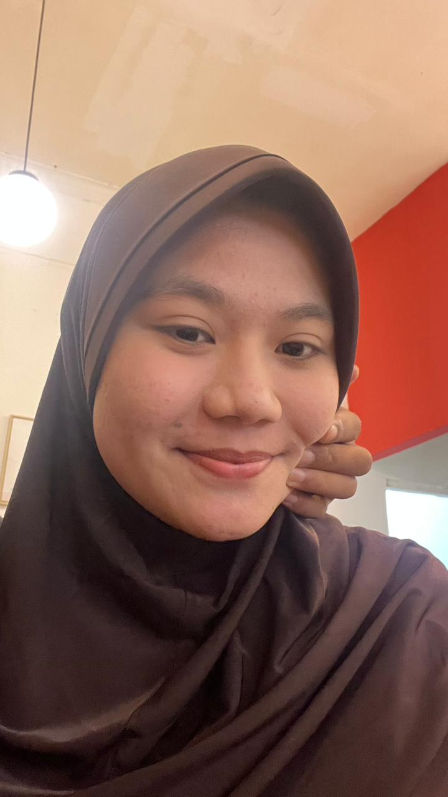
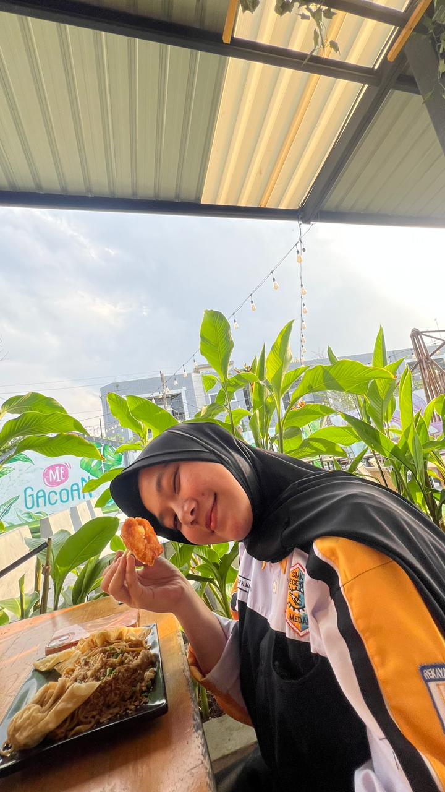
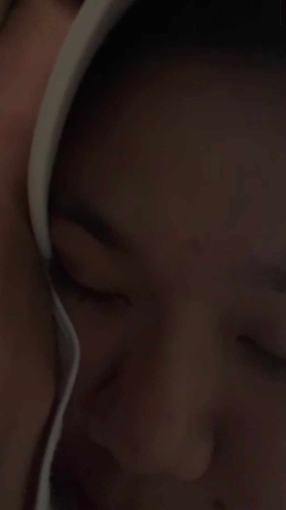
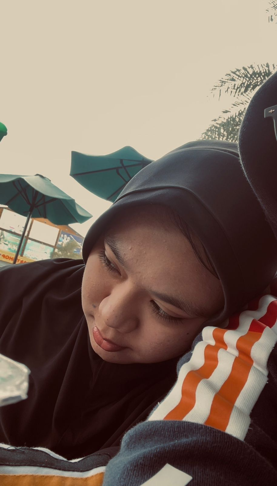
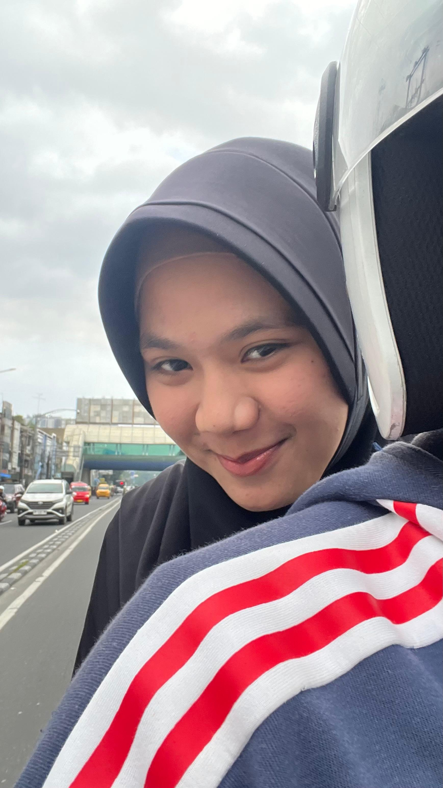
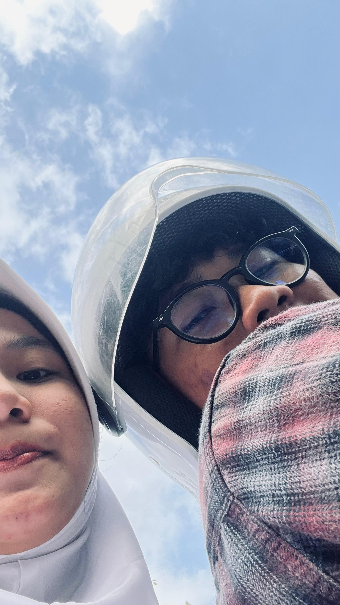
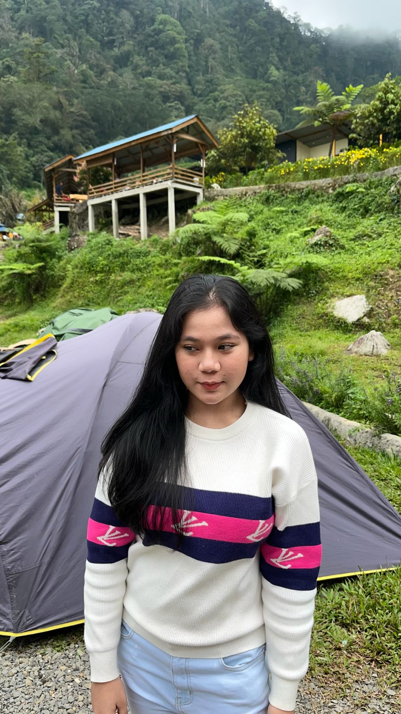
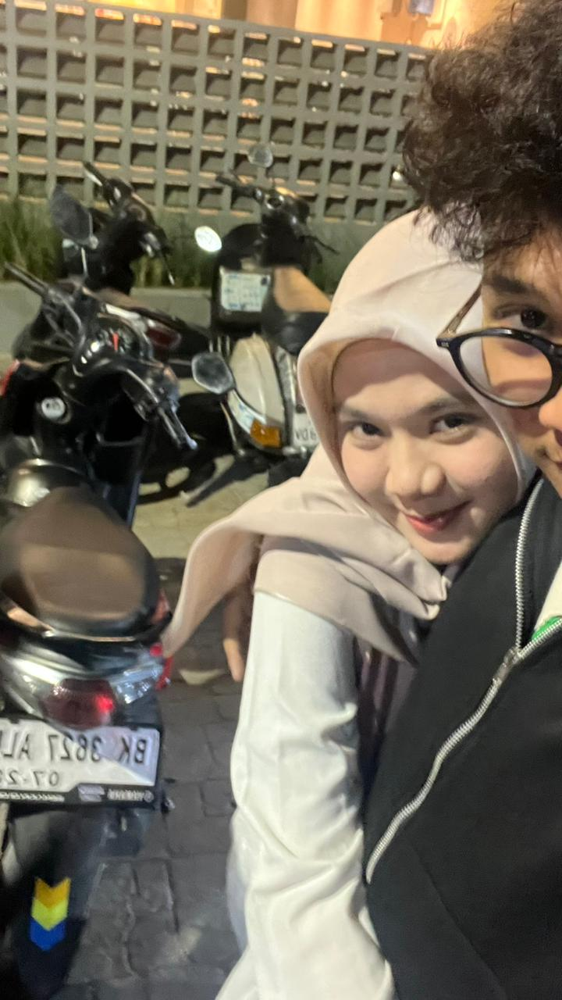
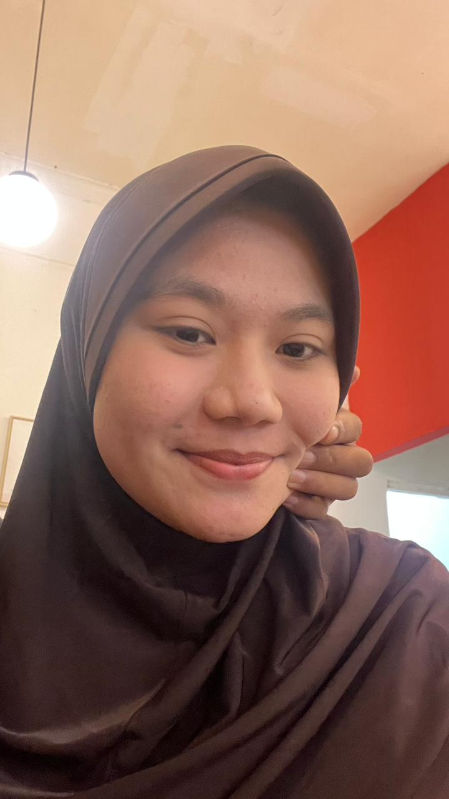